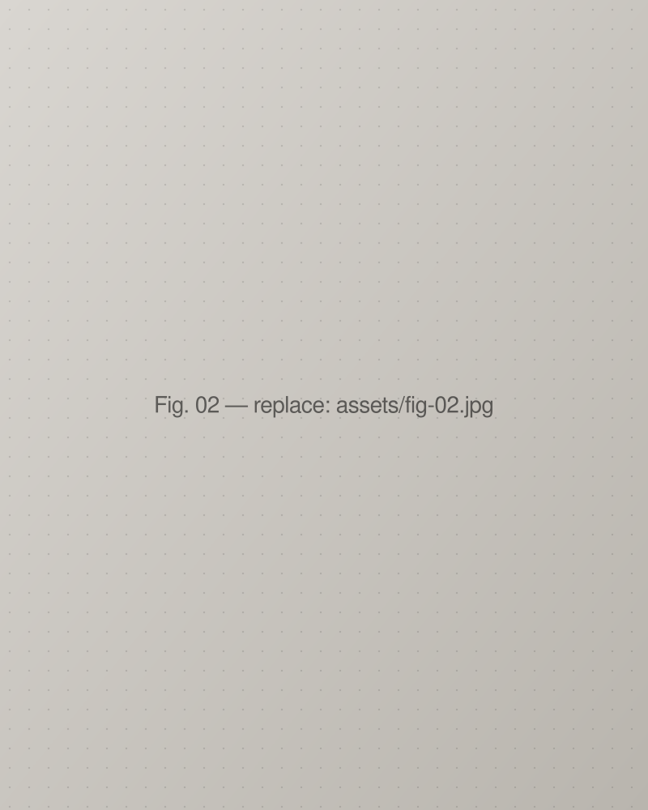
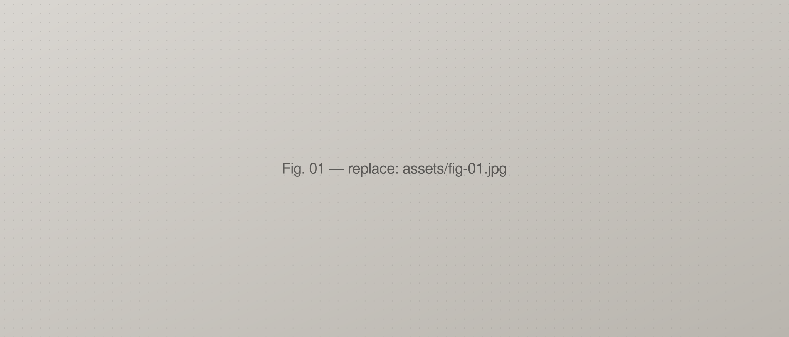
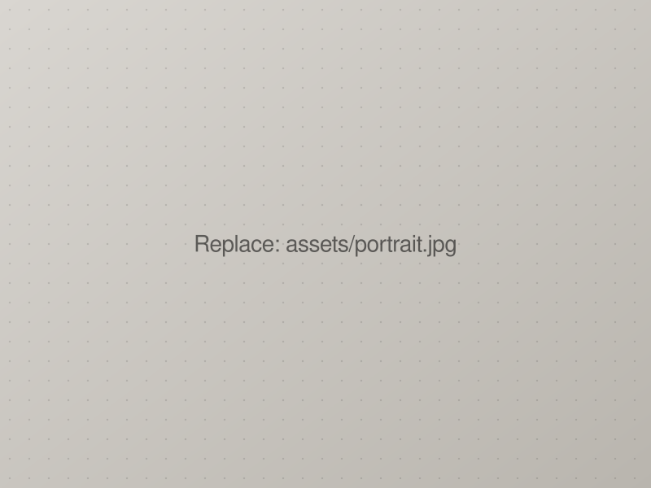
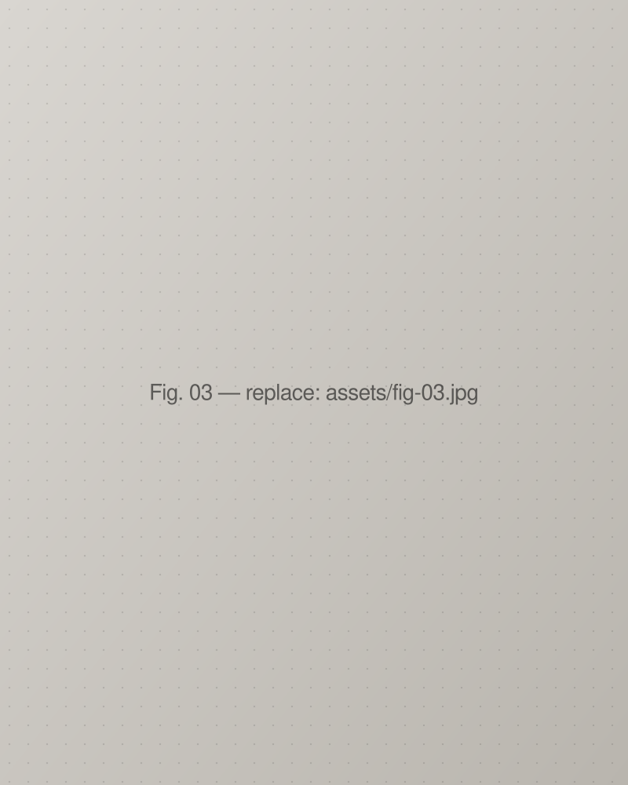

01 — Kennedy Prize Studentship
One of three full scholarships awarded annually by the Kennedy Institute, University of Oxford.
DPhil candidate in Translational Medicine at the Kennedy Institute, University of Oxford, and Managing Director of Nucleate UK in Oxford.
BSc (USYD), MPhil (Cantab), DPhil candidate (Oxon)


Profile
I study how fibroblasts take on different inflammatory roles depending on where in the body they sit. My DPhil at the Kennedy Institute, supervised by Prof. Chris Buckley and Prof. Mark Coles, builds a multiresolution atlas of human digit joints to map the stromal niches that shape inflammatory joint disease.
Before Oxford I read Genomic Medicine at Cambridge and Science/Law at Sydney, and worked in commercial litigation. I now lead the Oxford chapter of Nucleate UK, supporting early-stage life-science companies.
Based in Oxford, UK.
Oct 2025 – Present
Managing Director (Oxford)Nucleate UK
2020
Dispute AnalystCommonwealth Bank of Australia · 6-month contract
2018 – 2020
Commercial Litigation ParalegalCornwalls Law
2023 – Sep 2026
DPhil, Translational MedicineUniversity of Oxford, Kennedy Institute
2021 – 2023
BM BCh, Graduate Entry MedicineUniversity of Oxford
2020 – 2021
MPhil, Genomic MedicineUniversity of Cambridge
2017 – 2020
BSc, Applied Medical SciencesUniversity of Sydney · Science/Law programme
Peer-reviewed work from 2026.


DPhil thesis
A multiresolution atlas of human digit joints, contextualising the tissue-of-origin determinants of divergent inflammatory fibroblast responses, with a particular interest in the lymphocyte-interacting perivascular niche.
3D synchrotron imaging, spatial proteomics, spatial transcriptomics and single-cell RNA sequencing, analysed with Python (scverse, PyTorch, Zarr) and R.
Full CV →01 — Kennedy Prize Studentship
One of three full scholarships awarded annually by the Kennedy Institute, University of Oxford.
02 — First Place, EMPOWER 2024
International Biomedical Data Hackathon, Université Paris-Saclay. Two-week residential on whole-person biology, analysing longitudinal multi-modal data (weekly fMRI, sleep, wearables, microbiome, FBCs).
03 — Australian National Champion
Modern Pentathlon and Tetrathlon, 2024. The last Australian champion of the equestrian format before the Paris 2024 Olympic Games.
2024
Finalist, World University Games
Kaunas, Lithuania. Team lead for three senior Australian international athletes.
2022, 2023
Dean's Merit
Graduate Entry Medicine, University of Oxford.
2025 – Apr 2026
SecretaryOxford University Blues Committee
2022 – 2026
President, Captain & Non-executive MemberOxford University Modern Pentathlon Club
2023 – 2024
ChairOxford Surgical Innovation Conference
Programming & data
Languages
Right to work
For research collaborations, venture work, or anything else, email is best.